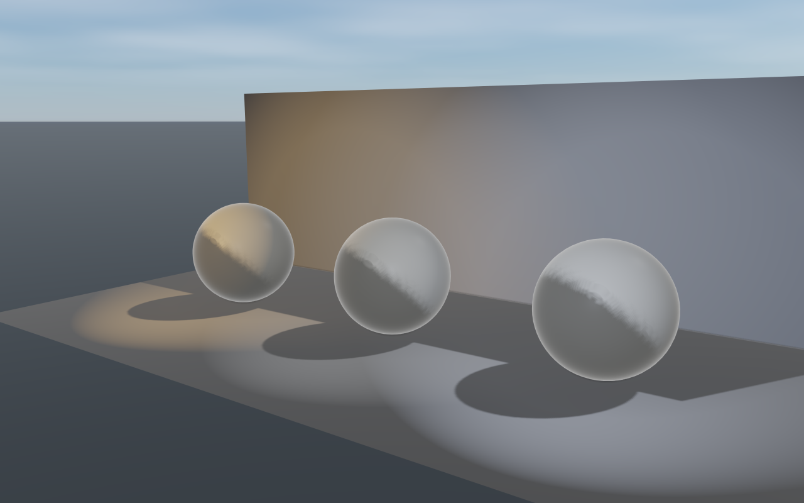
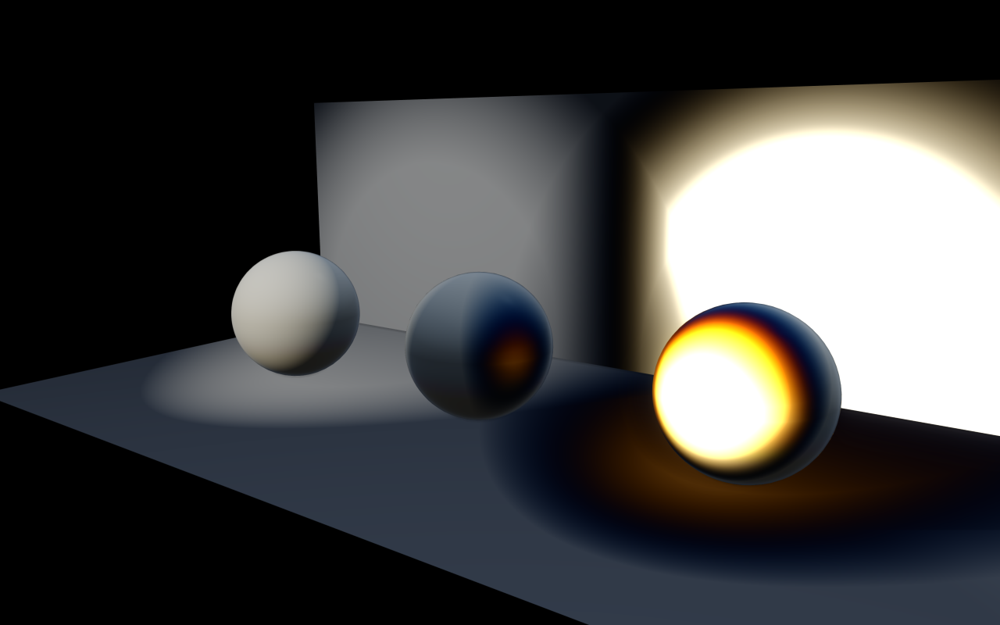
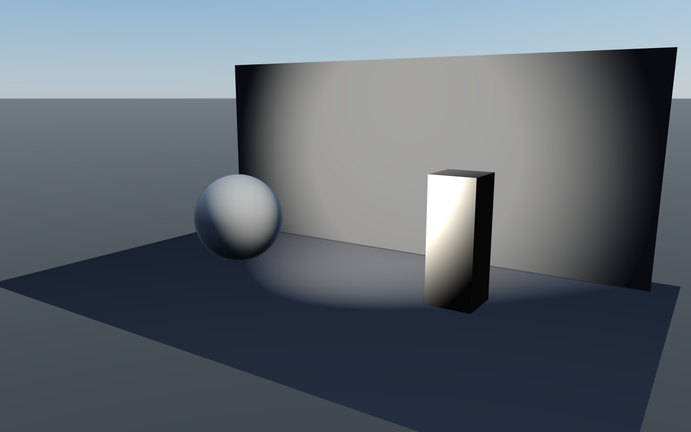
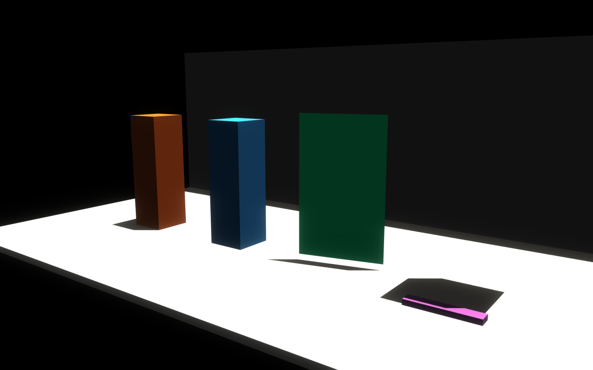
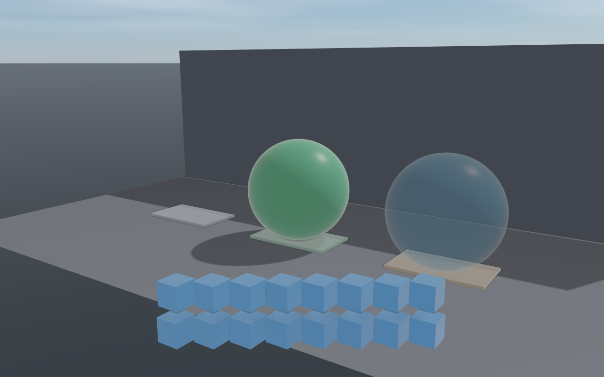
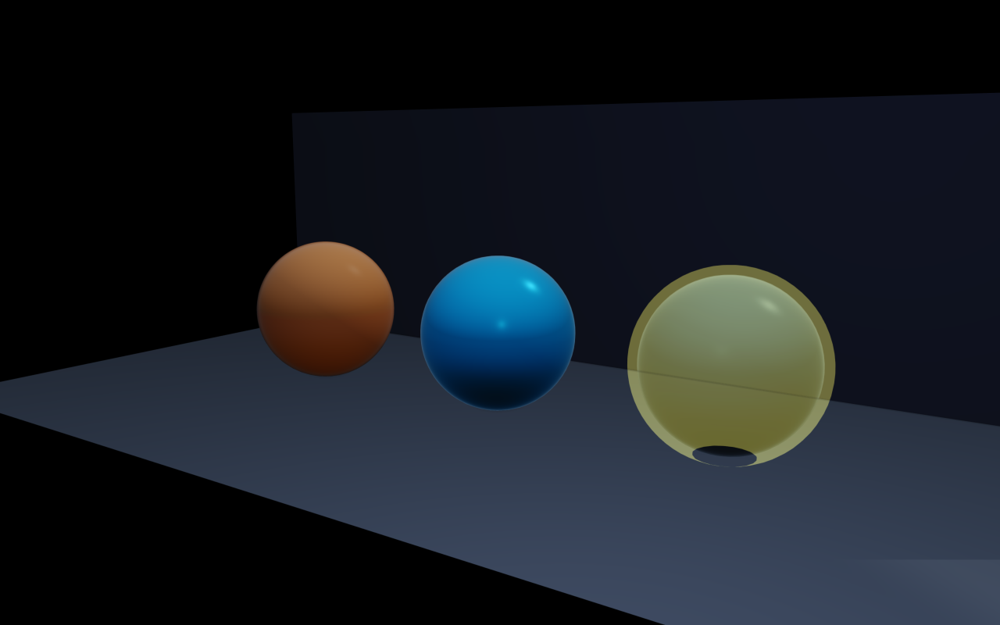

Custom visuals, instancing, and scene helpers
The renderer mirrors RaiSim objects automatically; this page covers the extra viewer-only entities you can add — visual primitives, instanced visuals and dense foliage, custom meshes, point clouds, coordinate frames, and the per-visual controls for visibility range, material override/overlay, and shadow casting modes. CoACD mesh approximation is also covered here.
CoACD mesh approximation visualization
The rayrai_coacd_mesh_approximation example
(Rayrai Example: CoACD Mesh Approximation) visualizes CoACD
collision-mesh approximation for five YCB meshes. Each row shows the original
triangle mesh next to its CoACD convex parts. Both are RaiSim mesh objects
created with World::addMesh, not rayrai visuals: the parts form one object
drawn in a single translucent colour, and rayrai renders them like any other
world object.
raisim::CoacdOptions options;
options.threshold = 0.04;
options.maxConvexHull = 12;
// Original mesh (left).
auto* original = world->addMesh(path, /*mass=*/1.0, /*scale=*/3.0, "",
raisim::MeshCollisionMode::ORIGINAL_MESH, 1, 0);
original->setPosition(-0.45, 0.0, 0.8);
original->setBodyType(raisim::BodyType::STATIC);
// CoACD convex parts (right), drawn translucent.
auto* coacd = world->addMesh(path, 1.0, 3.0, "",
raisim::MeshCollisionMode::CONVEXIFY, 1, 0, options);
coacd->setPosition(0.45, 0.0, 0.8);
coacd->setBodyType(raisim::BodyType::STATIC);
coacd->setAppearance("0.95,0.52,0.24,0.78");
Examples
Rayrai examples are documented in Examples. Each example page includes a short explanation, CMake target, and build-tree usage.
Quick map to selected rayrai targets:
rayrai_tcp_viewer: source-built viewer forraisim::RaisimServerscenes.rayrai_basic_scene: minimal ImGui + SDL2 app with a robot on a ground plane, showing the standard update loop and the offscreen render texture.rayrai_complete_showcase: broad in-process scene that combines RGB/depth cameras, raw buffer readback, LiDAR visualization, camera frustums, and custom visuals.rayrai_rgb_camera/rayrai_depth_camera/rayrai_lidar_pointcloud/rayrai_aruco_marker: robot-attached sensor rendering, depth readback, point-cloud visualization, and marker rendering.rayrai_custom_visuals/rayrai_instancing_grid/rayrai_pointcloud_animation: visual primitives, instancing, and dynamic point-cloud streaming.rayrai_pbr_material_grid/rayrai_pbr_texture_maps/rayrai_quality_lighting: PBR materials, bundled glTF PBR sample assets, texture slots, quality presets, and additional-light configurations.rayrai_visual_asset_support: textured URDF visual assets (ANYmal C and YCB objects with OBJ/DAE meshes) whose visual and collision geometry stay separate.rayrai_coacd_mesh_approximation: in-process comparison of source meshes and CoACD convex approximation parts generated throughWorld::addMesh.rayrai_runtime_scene_editing: runtime add/remove of RaiSim objects with stable ids, snapshots, collision filters, and cloning.rayrai_rolling_spinning_friction/rayrai_swept_ccd: physics-focused scenes that visualize rolling/spinning friction and swept CCD.rayrai_forest: a physics heightmap covered with instanced plants and rocks, loaded asynchronously behind a progress overlay; see Rayrai Example: Forest and Dense foliage below. Rayrai Example: Forest From .rscene loads the same world from its.rscenefile withraisin::applyRscene(new in v2.7.1, not yet released; see .rscene File).OpenUSD visual meshes can be loaded through
RayraiWindow::addVisualMesh; see OpenUSD Loading for importer scope and runtime layout.
Custom visuals and instancing
rayrai renders two categories of content:
RaiSim objects: The renderer mirrors the objects already in the world.
Custom visuals: Extra visuals you add explicitly (spheres, boxes, meshes, etc.).
Custom visuals are created through RayraiWindow and returned as Visuals:
auto box = viewer.addVisualBox("marker", 0.1, 0.1, 0.1,
glm::vec4(0.2f, 0.6f, 1.0f, 1.0f));
box->setPosition(1.0, 0.0, 0.5);
The float-per-channel signatures (addVisualSphere(name, radius, r, g, b, a)
etc.) still exist for compatibility, but the glm::vec4 colour overloads
are preferred in new code. addVisualMesh similarly accepts a
glm::dvec3 scale + glm::vec4 colour overload.
For repeated geometry, use InstancedVisuals to reduce draw overhead:
auto instanced = viewer.addInstancedVisuals(
"boxes", raisim::Shape::Box, glm::vec3(0.1f, 0.1f, 0.1f),
glm::vec4(1.f, 0.2f, 0.2f, 1.f), glm::vec4(0.2f, 0.2f, 1.f, 1.f));
instanced->addInstance(glm::vec3(0.0f, 0.0f, 0.1f), 0.0f);
instanced->addInstance(glm::vec3(0.2f, 0.0f, 0.1f), 1.0f);
The last argument is the per-instance colour weight: 0 uses the first
colour, 1 the second, and values in between blend the two.
Quaternions passed as glm::vec4 are in (w, x, y, z) order: ori.x is w
and ori.w is z. This applies to the glm::vec4 overload of
Visuals::setOrientation, to InstancedVisuals::addInstance and
InstancedVisuals::setOrientation(id, ori), and to
InstancedVisuals::InstanceSpec::orientation. The order matches the scalar
setOrientation(w, x, y, z) overload and the getOrientation getters, so
a value that is read back can be set again unchanged, and
glm::vec4(1, 0, 0, 0) is the identity.
Note
In 2.6.1 and earlier, these glm::vec4 arguments were read as
(x, y, z, w). Code that passed glm::vec4(0, 0, 0, 1) as the identity,
or built orientations in x, y, z, w order, must switch to w, x, y, z.
If you want to load meshes once and share them across visuals, use
raisin::RayraiGlobalAsset and addVisualCustomMesh. A standalone
RayraiGlobalAsset imports asynchronously by default: getMeshes then
returns an empty list that is filled only by pollAsyncLoads() on that same
object, because the renderer polls only its own asset manager. Disable
asynchronous loading on a standalone manager when the meshes are needed
immediately:
auto assets = std::make_shared<raisin::RayraiGlobalAsset>();
assets->setAsyncMeshLoadingEnabled(false); // getMeshes loads before returning
auto meshes = assets->getMeshes("/path/to/model.obj");
auto custom = viewer.addVisualCustomMesh("custom", meshes, glm::vec4(0.9f, 0.9f, 1.0f, 1.0f));
custom->setPosition(0.0, 1.0, 0.5);
The shared mesh handle returned by RayraiGlobalAsset::getMeshes and the
raisin::GenMesh* helpers in rayrai/helper.hpp (GenMeshCube,
GenMeshPlane, GenMeshSphere, GenMeshCylinder, GenMeshCapsule,
GenMeshHeightmapRaisim) all use the type alias
raisin::MeshList = std::shared_ptr<std::vector<std::shared_ptr<OpenGLMesh>>>.
Prefer MeshList over the long nested type in new code.
Visuals::approximateBounds(center, radius) and
InstancedVisuals::approximateBounds(center, radius) expose the conservative
world-space bounds that the renderer uses for culling, picking, shadow planning,
and camera framing. approximateRadius() returns only the radius; the center
can differ from getPosition() for offset meshes, generated heightmaps,
articulated links, and deformables. Use setCustomBounds(localCenter, localRadius) when a
programmatically deformed visual needs a tighter or more stable bound than its
source mesh provides.
Bulk instances and instanced LOD
InstancedVisuals::addInstances appends a span of InstanceSpec records
(position, orientation, scale, colorWeight) and marks the batch
for upload once, which is much cheaper than thousands of addInstance calls.
reserveInstances preallocates storage. The scale given to addInstance
or InstanceSpec is multiplied by the batch’s base size, while
setScale(id, s) and getScale(id) use the final per-instance scale.
auto pines = viewer.addInstancedVisuals(
"pines", raisim::Shape::Mesh, glm::vec3(1.0f), glm::vec4(1.0f),
glm::vec4(0.85f, 0.92f, 0.75f, 1.0f), "/path/pine.glb");
std::vector<raisin::InstancedVisuals::InstanceSpec> specs;
for (const auto& p : placements) {
raisin::InstancedVisuals::InstanceSpec s;
s.position = p.position;
// Yaw about +z, in (w, x, y, z) order.
s.orientation = glm::vec4(std::cos(0.5f * p.yaw), 0.0f, 0.0f,
std::sin(0.5f * p.yaw));
s.scale = glm::vec3(p.scale); // relative to the base size
s.colorWeight = p.shade; // 0 = first colour, 1 = second
specs.push_back(s);
}
pines->reserveInstances(specs.size());
pines->addInstances(specs);
Draws can be thinned without changing the authored instances:
setMaxRenderedInstances(n)draws at mostninstances;0(the default) draws all of them.setRenderedInstanceStride(k)draws everyk-th instance (default 1).setProjectedLodPolicy(enabled, minProjectedRadiusPixels = 2, maxStride = 8)raises the stride when instances project below the given radius. It is off by default, and the explicit stride stays a lower bound.Automatic mesh LOD (
setAutomaticMeshLodEnabled, on by default, or theautomaticMeshLodEnabledargument ofaddInstancedVisuals) generates simplified meshes for triangle-mesh batches (cached for file-backed ones) and picks a level from the projected size when drawing.setDoubleBufferedInstanceUploads(true)helps when full instance-buffer rebuilds are frequent, andsetSortTransparentInstances(true)sorts transparent instances back to front. Both are off by default.
With asynchronous mesh loading (the default, see Capture, diagnostics, and headless rendering) and automatic
mesh LOD enabled, a batch created while its mesh file is still importing builds
its LOD chain on a worker thread and uploads it one submesh per poll. The batch
is not drawn until that finishes. hasPendingAsyncMeshPreparation() reports
this state, RayraiWindow::pendingAsyncMeshLoadCount() includes these jobs,
and every update(), external-camera render, or pollAsyncMeshLoads call
advances them.
Meshes prepared off the render thread
OpenGLMesh::createCpuGeometry(vertices, indices, textures, baseColor)
builds a mesh without any OpenGL call and computes missing tangents, so it can
run on a worker thread. Call uploadPreparedGeometry() later on the thread
that owns the GL context, then add the mesh to a MeshList for
addVisualCustomMesh or addInstancedVisuals.
uploadPreparedGeometry() (with its default compactIndices = true),
OpenGLMesh::createWithCompactIndices, and generated foliage LODs store
16-bit indices for triangle meshes whose largest index is below 65535 (0xFFFF
is reserved for primitive restart). Asynchronous file imports keep 32-bit
indices. Code that draws an OpenGLMesh VAO directly must use
indexElementBytes() (2 or 4) to choose GL_UNSIGNED_SHORT or
GL_UNSIGNED_INT.
Dense foliage
An instanced mesh visual is treated as foliage when one of its materials is
not opaque (masked, hashed, or blended) or has a FoliageType, or when its
mesh path contains one of the words foliage, grass, leaf,
leaves, bush, shrub, plant, flower, fern, pine,
sapling, twig, or vegetation. The path test is a case-insensitive
substring match on the full path; batches created from a MeshList are
classified by their materials only. With asynchronous loading only the path is
known when the batch is created, so set the policies below explicitly when the
path does not identify the asset. Foliage and forest rendering covers dense vegetation in
more depth.
For foliage batches rayrai:
enables shadow-only instance LOD, hierarchical cluster culling, and distant impostors when the batch is created;
builds a seven-level LOD chain and selects levels from the projected simplification error, separately for the camera and for shadow maps, and culls instances individually in large batches;
merges compatible opaque and alpha-masked batches that share a mesh, material, and wind settings, across visuals. Materials with custom depth or stencil state, a render priority, a non-default blend mode, billboarding, fixed size, or heightmap displacement are drawn separately;
casts shadows like any other instanced visual. In 2.6.1 and earlier, foliage and grass batches turned shadow casting off automatically; call
setCastsShadows(false)to keep that behaviour, for example for dense grass.
The policies can also be set explicitly:
setShadowFoliageLodPolicy(enabled, minProjectedRadiusPixels = 2.5, maxStride = 16, maxShadowDistance = 0)thins instances in shadow passes only. A positivemaxShadowDistanceleaves the batch out of shadow maps when it is farther away than that.setFoliageImpostorPolicy(enabled, maxProjectedRadiusPixels = 1.15, minInstanceCount = 1024)draws camera-facing quads for batches whose source mesh projects below the radius.setHierarchicalFoliageClustersPolicy(enabled, leafTargetInstances = 32, minInstanceCount = 256, minRejectionRatio = 0.08)culls groups of instances against the view and shadow frusta.configureFoliageWind(rootHeight, tipHeight, windStrength, stiffness = 0.5, flutterWeight = 0.15)adds wind bending to the batch and also enables impostors, shadow LOD, and clusters. CallsetFoliageImpostorPolicy(false)afterwards to keep impostors off.configureGrassPatch(...)marks the batch as a grass patch with a draw budget, fade distances, and wind response, and enables projected LOD, shadow LOD, and clusters. Instances are still authored withaddInstanceoraddInstances.
RAYRAI_FOLIAGE_LOD_PIXEL_ERROR (default 2.25, valid range (0, 8])
sets the projected error budget in pixels for camera LODs, and
RAYRAI_FOLIAGE_SHADOW_LOD_PIXEL_ERROR (default 2.5; it follows the
camera value when only that one is set) the budget for shadow maps. Invalid
values fall back to 2.25. Both are read once per process.
GPU instance culling and indirect multi-draws need OpenGL 4.3. On older contexts, such as OpenGL 4.1 on macOS, rayrai uses its CPU paths and prints a one-time fallback warning. Hierarchical cluster culling always runs on the CPU.
The per-batch diagnostics shadowFoliageLodDiagnostics(),
foliageImpostorDiagnostics(), and hierarchicalFoliageClusterDiagnostics()
and RayraiWindow::foliageRenderDiagnostics() describe the last rendered
frame; grassPatchDiagnostics() reports the settings passed to
configureGrassPatch. See Capture, diagnostics, and headless rendering. The wind clock can follow
simulation time with viewer.setFoliageWindTimeSeconds(t); the global wind
field is described in Weather and atmospherics.
Detectability and capture render passes
VisualCategory is a render-filter category for user-created visuals, not a
physics or collision concept. Visuals, InstancedVisuals, PointCloud,
and helpers built on top of Visuals default to
VisualCategory::NotDetectable. The normal interactive viewer still draws
non-detectable objects, which is intentional: debug axes, camera frustums,
selection helpers, labels, temporary probes, and other viewer-only geometry can
be visible to a human operator without contaminating external-camera or
generated capture images.
External camera scene-color renders filter custom visualization objects by this
category. When a pass requests detectable-only visualization objects,
Visuals and InstancedVisuals are included only after
setDetectable(true) or
setCategory(VisualCategory::Detectable). Point clouds follow the same rule
in passes that request detectable-only point clouds. Reflection-probe captures
and supersampled documentation captures use the same external-camera machinery,
so custom helper geometry that should appear there must also be marked
detectable.
The RaiSim RGBCamera and DepthCamera overloads intentionally disable
rayrai custom visualization objects, point clouds, and coordinate frames,
regardless of detectability. Use detectability for external-camera/capture paths where
RenderOverrides::drawVisualizationObjects or
RenderOverrides::drawPointClouds is enabled.
Detectability does not create a RaiSim object, collision shape, dynamics body,
semantic label, or material id. RaiSim world objects are controlled by their
own wrappers and render-pass visibility rules; VisualCategory only applies
to rayrai-created visualization objects and point clouds.
Use this rule of thumb:
call
setDetectable(true)for custom props, targets, imported meshes, or point clouds that should appear in external camera, reflection-probe, or documentation captures;leave debug-only helpers non-detectable so they remain visible in the viewer but are skipped by detectable-only capture passes;
use
RenderOverrides::drawVisualizationObjectsandRenderOverrides::drawPointCloudsto enable those object families in an external render, but remember that those toggles still respect detectability filtering for custom visuals and point clouds.
auto target = viewer.addVisualSphere("camera_target", 0.08,
glm::vec4(1.0f, 0.2f, 0.1f, 1.0f));
target->setDetectable(true); // Included in external-camera captures.
auto axisHelper = viewer.addVisualBox("debug_axis",
0.02, 0.02, 1.0,
glm::vec4(0.1f, 0.8f, 1.0f, 1.0f));
axisHelper->setDetectable(false); // Viewer helper; skipped by captures.
Visual shadow casting, visibility range, and material overrides
raisin::Visuals exposes per-visual controls that go beyond position/colour
and are useful for authoring polished scenes:
setShadowCastingMode(ShadowCastingMode::Off/On/DoubleSided/ShadowsOnly) —ShadowsOnlyis useful for invisible proxy meshes that cast shadows for off-screen geometry;DoubleSidedis intended for thin foliage cards.setColorPassVisible(false)— hide a visual from color rendering without changing the rest of its state. This is lower-level thanShadowsOnlyand is used internally for TCP mesh-batch proxy visuals.setVisibilityRange(begin, end, beginMargin, endMargin, VisibilityRangeFadeMode)— draw the visual only while the camera’s distance to its bounds center lies betweenbeginandend(0disables that side). WithSelfthe visual fades overthreshold ± margin, a window centered on each threshold;Disabled(the default) cuts off hard.Dependenciesis reserved and currently behaves likeDisabled.setMaterialOverride(material)— replace all materials on this visual.setMaterialRemap(sourceName, material)— remap a specific imported material slot by name without touching the rest.setMaterialOverlay(material)— additional draw pass on top of the base material (selection outlines, x-ray decals, ghost previews).setTwoSided/setFlatShading/setUseMeshColor— quick toggles for inspection visuals. WithsetUseMeshColor(true)the alpha of the visual’ssetColorvalue still scales the mesh colour, so lowering it makes a textured mesh translucent.setCategory/setDetectable— assign theVisualCategoryused by detectable-only external-camera, reflection-probe, documentation-capture, and point-cloud render filters. It is render metadata only, not physics or collision state.setPbrEnvironment(pbrEnvironment)/setPbrEnvironment(envMap, brdfLut, strength)/setPbrEnvironment(envMap, irradianceMap, prefilteredMap, brdfLut, strength, boxProjection, probePosition, boxMin, boxMax)— attach an HDR environment to a single visual when global IBL is not appropriate; see Lighting, shadows, and HDR/IBL.setTransparency,setTransparentSortOffset,setTransparentSortUsesBoundsCenter— fine control of transparent draw order without enabling full OIT.setAutomaticMeshLodEnabled/setAutomaticMeshLodBias— generated LOD selection for imported meshes.setCustomBounds(localCenter, localRadius)— override the bounds used by frustum culling and shadow planning for skinned or programmatically-deformed meshes.
raisin::InstancedVisuals mirrors a subset of these (setCastsShadows,
setUseMeshColor, setCategory / setDetectable); its draw-cost
controls are described in Bulk instances and instanced LOD above. Instanced
shadow casting is a plain on/off switch that defaults to on, foliage included;
there is no ShadowCastingMode, visibility range, or material override per
batch. For mesh instances, setUseMeshColor(true) preserves mesh-authored
base colors or texture colors instead of forcing the per-instance blend colors.
// Two LODs of the same prop: high-detail near, low-poly far.
auto highLod = viewer.addVisualMesh("crate_hi", "/path/crate_hi.glb",
glm::dvec3(1.0), glm::vec4(1.0f));
auto lowLod = viewer.addVisualMesh("crate_lo", "/path/crate_lo.glb",
glm::dvec3(1.0), glm::vec4(1.0f));
// High detail up to 10 m; it fades out between 9 m and 11 m.
highLod->setVisibilityRange(/*begin=*/0.0f, /*end=*/10.0f,
/*beginMargin=*/0.0f, /*endMargin=*/1.0f,
raisin::Visuals::VisibilityRangeFadeMode::Self);
// Low detail from 10 m (fading in between 9 m and 11 m) out to 80 m.
lowLod->setVisibilityRange(/*begin=*/10.0f, /*end=*/80.0f,
/*beginMargin=*/1.0f, /*endMargin=*/0.0f,
raisin::Visuals::VisibilityRangeFadeMode::Self);
// Stand-in proxy that casts shadows but never draws colour.
auto proxy = viewer.addVisualBox("offscreen_shadow_proxy",
2.0, 2.0, 3.0, glm::vec4(0.0f));
proxy->setPosition(8.0, 0.0, 1.5);
proxy->setShadowCastingMode(raisin::Visuals::ShadowCastingMode::ShadowsOnly);
// Material override for inspection, plus an outline overlay for selection.
auto ghost = raisin::Material::unlitColor("inspect",
glm::vec4(0.0f, 0.85f, 0.95f, 0.55f));
auto outline = raisin::Material::unlitColor("outline",
glm::vec4(1.0f, 1.0f, 1.0f, 1.0f));
auto inspect = viewer.addVisualMesh("inspect_target", "/path/asset.glb",
glm::dvec3(1.0), glm::vec4(1.0f));
inspect->setMaterialOverride(ghost);
inspect->setMaterialOverlay(outline);
// Remap a single material slot on a multi-material imported asset. Thin
// glass is see-through by transmission, so its alpha stays at one; see
// the glass section of the Materials page.
auto tinted = raisin::Material::glass("tinted_glass"); // thin pane
tinted.baseColorFactor = glm::vec4(0.1f, 0.4f, 0.8f, 1.0f); // pane tint
inspect->setMaterialRemap(/*sourceName=*/"GlassPanes", tinted);
Point clouds and coordinate frames
Point clouds and coordinate frames are lightweight debug aids:
auto cloud = viewer.addPointCloud("scan");
auto frame = viewer.addCoordinateFrame("robot_frame");
These objects are rendered alongside the world and can be updated every frame.
Call updatePointBuffer() after changing point cloud data.
cloud->positions = {glm::vec3(0, 0, 1), glm::vec3(0.2f, 0.1f, 1.1f)};
cloud->colors = {glm::vec4(0, 1, 0, 1), glm::vec4(1, 0, 0, 1)};
cloud->updatePointBuffer();
Per-visual and per-light gallery
Each additional light exposes optional projector cookies, colour temperature,
distance fade for both lighting and shadows, and a per-light shadow toggle.
The renderer also supports negative lights that subtract instead of add —
useful for darkening or tinting a region, or carving artistic dark spots — and
arbitrary projector textures (gobos) that mask a spotlight’s contribution.
See Lighting, shadows, and HDR/IBL for the full AdditionalLight API; this gallery
focuses on the per-visual treatment side.
The visibility-range / material override / shadow-casting-mode controls on
Visuals give per-visual treatment for the same authored mesh: a high-LOD
near visual fades into a low-LOD far one, an override material swaps the look
for inspection, and shadows-only proxies cast occlusion for off-screen
geometry without rendering colour.
// Coloured spotlight with a temperature-driven warm tint and gobo cookie.
raisin::RayraiWindow::AdditionalLight gobo;
gobo.type = raisin::LightType::SPOT;
gobo.position = glm::vec3(1.5f, -1.5f, 3.0f);
gobo.direction = glm::normalize(glm::vec3(-1.0f, 1.0f, -1.5f));
gobo.diffuse = glm::vec3(1.6f);
gobo.spotInnerCos = std::cos(glm::radians(12.0f));
gobo.spotOuterCos = std::cos(glm::radians(28.0f));
gobo.temperatureEnabled = true;
gobo.temperatureKelvin = 3200.0f; // warm tungsten
gobo.projectorMap = goboTextureId; // RGBA8 cookie
gobo.projectorStrength = 1.0f;
gobo.distanceFadeEnabled = true;
gobo.distanceFadeBegin = 12.0f; // camera 12-16 m away: light fades out
gobo.distanceFadeLength = 4.0f;
gobo.distanceFadeShadow = 10.0f; // camera 10-14 m away: shadow fades out
gobo.castsShadows = true;
viewer.addAdditionalLight(gobo);
// A subtractive (negative) light that darkens a region; it removes more
// blue than red, so the region also turns warmer.
raisin::RayraiWindow::AdditionalLight dark;
dark.type = raisin::LightType::POINT;
dark.position = glm::vec3(-2.0f, 0.0f, 1.8f);
dark.diffuse = glm::vec3(0.10f, 0.16f, 0.32f);
dark.negative = true;
dark.constant = 1.0f; dark.linear = 0.5f; dark.quadratic = 0.20f;
viewer.addAdditionalLight(dark);
Light colour temperature + distance fade |
Negative lights |
|---|---|
 |
 |
Spotlight projectors (gobos) |
Shadow casting modes |
 |
 |
Visibility range |
Material override / overlay |
 |
 |